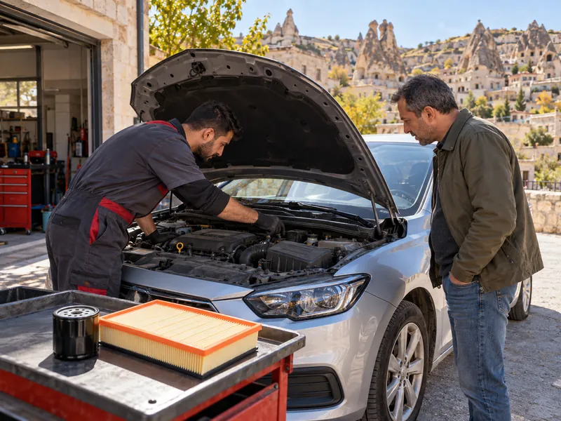

Araç TekniğiKonu 10 / 1051 çıkmış soru
Bakım, arıza belirtileri ve ekonomik sürüş
Aracın günlük kontrollerini ve periyodik bakımını, rodaj dönemini, egzoz dumanı ve anormal ses gibi arıza belirtilerini, yakıt tasarrufu sağlayan alışkanlıkları ve araçtaki güvenlik donanımlarını anlatır.

1Konu anlatımı
Akılda kalsın
- Triger kayışı, bujiler, yağ filtresi ve motor yağı kullanma kılavuzunda belirtilen kilometrede değiştirilir.
- Rodaj döneminde tam gazdan, ani hızlanmalardan, uzun süre aynı viteste gitmekten, ağır yük ve dik yokuşlardan kaçınılır.
- Yüksek rölanti devri, ayarsız frenler, kaçıran debriyaj ve eskimiş bujiler araçtan kaynaklanan yakıt israfı nedenleridir.
- Hıza uygun olmayan viteste gitmek, aşırı hız, ani kalkış ve duruşlar sürücüden kaynaklanan yakıt israfıdır; tavan bagajı tüketimi artırır.
- Egzozdan siyah duman çıkması karışım oranının bozulduğunu gösterir; dizelde sebep ayarsız enjeksiyon pompası olabilir.
- Kışa hazırlıkta akü, lastik ve antifriz kontrol edilir; cam suyu haznesine cam suyu antifrizi konur.
- Emniyet kemeri, aktif gergili emniyet kemeri ve hava yastığı kaza anında ölüm ve yaralanmaları azaltır.
Bakım neden önemlidir?
Kontrol ve bakımı zamanında ve doğru şekilde yapılan araç güvenli, ekonomik ve sorunsuz çalışır. Motor yakıtı verimli yaktığı için egzozdan daha az zararlı gaz çıkar ve hava kirliliğinin azalmasına da katkı sağlanır.
Günlük kontroller
Yola çıkmadan önce kısa bir kontrol, yolda kalmayı ve kazaları önler. Günlük kontrollerde motor yağı seviyesi, soğutma suyu seviyesi, fren hidroliği seviyesi, lastiklerin hava basıncı ve hasarı, lambalar, cam suyu ve gösterge panelindeki ikaz ışıkları gözden geçirilir.
Periyodik bakım
Periyodik bakım, aracın kullanma kılavuzunda belirtilen kilometre veya sürede yapılır. Bu bakımda değiştirilen başlıca parçalar motor yağı ve yağ filtresi, hava filtresi, yakıt filtresi, bujiler ve belirli kilometrelerde triger kayışıdır. Manifold, jant ve vites kutusu gibi parçalar periyodik olarak değişen parçalar değildir.
Bozuk yollar, aşırı sıcak, soğuk veya tozlu hava koşulları ve sürücünün ağır kullanım alışkanlıkları (kişisel kullanım farkları) parçaları daha çabuk yıpratır; bu durumlarda periyodik bakım daha erken yapılmalıdır. Aşırı nemli ve tozlu ortamlarda kullanılan araçta hava filtresinin bakımı daha sık yapılır.
Kışa hazırlık
- Akü kontrolü: Soğuk havada akü zayıflar.
- Lastik kontrolü: Kaygan yolda lastiklerin tutunması daha da önem kazanır.
- Antifriz kontrolü: Soğutma suyu donmamalıdır.
- Cam suyu haznesine cam suyu antifrizi konur; donan su hazneye ve pompaya zarar verir.
Rodaj (motor alıştırma) dönemi
Yeni ya da revizyon görmüş bir motorda hareketli parçaların birbirine alıştığı döneme rodaj denir. Aracın gelecekteki performansı için bu dönemde:
- Tam gaz vermekten kaçınılır.
- Ani hızlanmalardan kaçınılır.
- Uzun süre aynı viteste ve aynı hızda gitmekten kaçınılır; hız ölçülü biçimde değiştirilir.
- Ağır yüklerden ve aşırı yokuşlardan kaçınılır.
Rodaj dışında da motor çalışma sıcaklığına ulaşmadan ani gaz verilmez; soğuk motorda yağ henüz tüm parçalara ulaşmamıştır ve parçalar hızla aşınır.
Arıza belirtileri
| Belirti | Muhtemel anlamı |
|---|---|
| Egzozdan siyah duman | Yakıt fazla, tam yanmıyor: karışım oranı bozulmuş, hava filtresi tıkalı olabilir. Dizel motorda yakıt enjeksiyon pompası ayarsız olabilir. |
| Egzozdan mavimsi duman | Motor yağ yakıyor: silindirler ve segmanlar aşınmış. |
| Motor ısındıktan sonra da süren beyaz duman | Soğutma suyu yanma odasına geçiyor olabilir (silindir kapak contası). |
| Motordan anormal sesler | Ciddi mekanik arıza olabilir: trafik kurallarına uyarak durulur, kontak kapatılır ve kontrol ettirilir. |
| Yanık kablo kokusu | Elektrik tesisatında kısa devre: durulur, kontak kapatılır, akü bağlantısı çıkarılır. |
Motor arıza lambası yanarsa araç en kısa sürede servise götürülmelidir. Egzozdan çıkan karbonmonoksit, yakıtın tam yanmaması sonucu oluşan renksiz, kokusuz ve zehirli bir gazdır. Egzoz susturucusu çıkarılmış araç ise gürültü kirliliğini artırır.
Yakıt tasarrufu
Araçtan kaynaklanan yakıt israfı
- Rölanti devrinin yüksek olması: motor beklerken bile fazla yakıt harcar.
- Frenlerin ayarsız olması: balatalar sürekli sürtünür.
- Debriyajın kaçırması: motor gücü tekerleklere tam iletilmez.
- Eskimiş bujiler ve buji kabloları, kirli hava filtresi.
- Lastik basıncının düşük olması ya da önerilmeyen tip ve ebatta lastik kullanılması.
Sürücüden kaynaklanan yakıt israfı
- Aracın hızına uygun olmayan viteste gidilmesi.
- Fazla sürat; yüksek hızda hava direnci hızla artar.
- Ani kalkış ve duruşlar, sert frenler, tam gaz kullanımı.
- Gereksiz yere tavan bagajı taşınması; hava direncini artırır.
Motorda yapılan ve yakıt tüketimini etkileyen ayarlar rölanti, buji ve avans ayarıdır; far ayarının yakıta etkisi yoktur. Klima araç içinin sıcaklığını, nemini ve hava dolaşımını ayarlamak için kullanılır; kompresörü motordan güç aldığı için yakıt tüketimini azaltmaz, artırır.
Güvenlik donanımları
- Emniyet kemeri: Sürücü ve yolcuları koltukta tutar, savrulmayı ve araçtan fırlamayı önler; kaza anında ölüm ve yaralanmaları en aza indirir. Aktif gergili emniyet kemeri çarpışma anında kemeri otomatik olarak gererek kişiyi koltuğa sabitler.
- Hava yastığı (airbag): Çarpışma anında sensörlerin uyarısıyla otomatik olarak şişen pasif güvenlik sistemidir; emniyet kemeriyle birlikte etkilidir.
- Park sensörü, polen filtresi ve açılır tavan ise güvenlik değil konfor donanımıdır.
Araçta ilk yardım çantası, yangın söndürme cihazı ve reflektör (yansıtıcı uyarı üçgeni) bulundurulmalıdır. Reflektör, arıza veya kaza nedeniyle yolda kalındığında yaklaşan sürücüleri uyarmak için aracın arkasına konur. Yangın riski yüksek olan tehlikeli madde taşıyan araçlarda yangın söndürme cihazı bulundurmak zorunludur.
2Bu konunun soruları
MEB sınavlarında bu konudan çıkmış 51 soru (8 tanesi en az üç sınavda soruldu). Her soruda doğru cevabı ve açıklamasını hemen görürsünüz.
Hangi sorular?
Sıralama